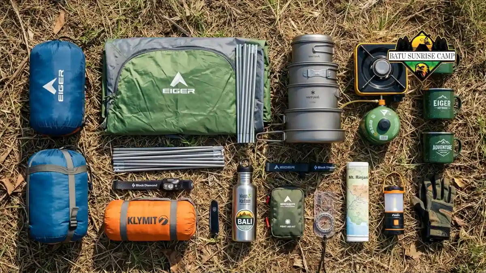

Paket alat camping lengkap adalah kumpulan perlengkapan berkemah dalam satu set pembelian, mencakup tenda, sleeping bag, matras, hingga peralatan masak, yang dirancang untuk memudahkan persiapan sebelum berangkat ke alam terbuka.
Apa Itu Paket Alat Camping Lengkap?
Paket alat camping lengkap merujuk pada satu kesatuan produk yang menggabungkan berbagai perlengkapan berkemah inti agar pembeli tidak perlu mencari alat satu per satu.
Konsep ini populer di kalangan pemula karena menyederhanakan proses persiapan sekaligus membantu memastikan tidak ada perlengkapan penting yang terlewat.
Secara umum, paket ini ditujukan untuk individu, pasangan, atau kelompok kecil yang berencana berkemah di area camping ground, hutan, gunung dengan jalur landai, maupun tepi pantai.
Paket dengan skala lebih besar juga tersedia untuk kebutuhan keluarga atau rombongan komunitas outdoor.
Penggunaan paket alat camping lengkap paling relevan ketika seseorang baru memulai hobi berkemah dan belum memiliki alat apa pun, atau ketika seseorang ingin mengganti seluruh perlengkapan lama sekaligus.
Manfaat utamanya adalah efisiensi waktu berbelanja, potensi harga yang lebih kompetitif dibanding membeli satuan, serta kepastian bahwa alat-alat yang didapat saling kompatibel dari sisi ukuran dan fungsi.
Meski demikian, paket siap pakai memiliki batasan. Tidak semua komponen dalam paket selalu sesuai preferensi pribadi, misalnya kapasitas tenda atau ketebalan sleeping bag yang mungkin perlu disesuaikan lagi.
Risiko lain adalah kualitas komponen individual dalam paket terkadang lebih standar dibanding produk premium yang dibeli terpisah, sehingga penting memeriksa spesifikasi tiap item sebelum membeli.
Apa Saja Isi Standar Paket Alat Camping Lengkap?
Isi standar paket alat camping lengkap biasanya mencakup tenda, sleeping bag, matras, kompor portable, dan peralatan masak dasar yang disesuaikan dengan jumlah pengguna.
Komponen inti yang umum ditemukan dalam paket meliputi:
- Tenda dengan kapasitas 2 hingga 6 orang, tergantung jenis paket.
- Sleeping bag atau kantong tidur sesuai suhu area camping.
- Matras atau alas tidur untuk kenyamanan dan insulasi dari tanah.
- Kompor portable beserta peralatan masak ringkas.
- Headlamp atau lampu camping sebagai sumber penerangan.
- Tas carrier atau daypack untuk membawa seluruh perlengkapan.
Paket dengan tingkatan lebih lengkap terkadang menambahkan aksesori seperti cooler box, meja lipat portable, kursi lipat, hingga trekking pole.
Variasi isi ini umumnya membedakan segmen harga paket, mulai dari paket dasar untuk kebutuhan camping santai hingga paket premium untuk pendakian jarak menengah.

Isi paket alat camping lengkap dengan berbagai perlengkapan berkemah.
Bagaimana Cara Memilih Paket Alat Camping yang Tepat?
Cara memilih paket alat camping yang tepat dimulai dari menyesuaikan kapasitas tenda dengan jumlah peserta, lalu memeriksa spesifikasi suhu sleeping bag terhadap kondisi lokasi.
Beberapa faktor yang perlu dipertimbangkan sebelum membeli:
- Jumlah peserta dan kapasitas tenda yang dibutuhkan.
- Medan dan cuaca lokasi, karena dataran tinggi memerlukan sleeping bag dengan rating suhu lebih rendah.
- Berat total paket, terutama jika perjalanan menuju lokasi memerlukan trekking cukup jauh.
- Material tenda, idealnya menggunakan bahan tahan air dengan lapisan waterproof yang memadai.
- Anggaran yang tersedia, karena rentang harga paket alat camping lengkap cukup bervariasi tergantung merek dan kelengkapan.
Bagi pemula, disarankan memilih paket dengan komponen dasar yang solid terlebih dahulu, kemudian menambah aksesori pendukung secara bertahap sesuai kebutuhan dan frekuensi camping.
Apa Kelebihan Membeli Paket Dibanding Alat Satuan?
Kelebihan membeli paket alat camping lengkap dibanding alat satuan adalah efisiensi biaya, kepastian kompatibilitas antar alat, dan proses belanja yang jauh lebih cepat.
Ketika alat dibeli satuan, pembeli perlu memastikan sendiri bahwa ukuran matras sesuai dengan tenda, atau kapasitas tas carrier cukup menampung seluruh perlengkapan.
Paket siap pakai menghilangkan risiko ketidaksesuaian ini karena seluruh komponen sudah dirancang saling melengkapi oleh produsen.
Dari sisi biaya, penjual umumnya memberikan harga bundling yang lebih rendah dibanding total harga jika setiap alat dibeli terpisah.
Selisih harga ini bervariasi tergantung merek dan jumlah komponen, namun secara umum paket bundling cenderung lebih ekonomis untuk kebutuhan dasar berkemah.
Kesalahan Umum Saat Memilih Paket Alat Camping Lengkap
Kesalahan umum saat memilih paket alat camping lengkap meliputi mengabaikan rating suhu sleeping bag dan tidak memeriksa berat total perlengkapan sebelum perjalanan.
Kesalahan yang sering terjadi antara lain:
- Memilih paket berdasarkan harga termurah tanpa memeriksa kualitas material.
- Mengabaikan kapasitas tenda sehingga terlalu sempit untuk jumlah peserta.
- Tidak mempertimbangkan berat total paket saat perjalanan memerlukan trekking.
- Melewatkan pengecekan kelengkapan aksesori pendukung seperti pasak dan tali tenda.
- Tidak menyesuaikan sleeping bag dengan suhu malam di lokasi tujuan.
Menghindari kesalahan ini membantu memastikan paket yang dibeli benar-benar sesuai dengan kebutuhan perjalanan, bukan hanya sesuai anggaran semata.
Tips Merawat Paket Alat Camping Lengkap agar Awet
Tips merawat paket alat camping lengkap agar awet meliputi mengeringkan tenda sebelum disimpan dan membersihkan peralatan masak setelah setiap penggunaan.
Langkah perawatan dasar yang disarankan:
- Keringkan tenda sepenuhnya sebelum dilipat dan disimpan untuk mencegah jamur.
- Simpan sleeping bag dalam kondisi longgar, bukan terlalu ditekan, agar bahan insulasi tidak cepat rusak.
- Bersihkan peralatan masak dari sisa makanan segera setelah digunakan.
- Periksa kondisi resleting tenda dan tas carrier secara berkala.
- Simpan seluruh perlengkapan di tempat kering dan terhindar dari sinar matahari langsung.
Perawatan rutin seperti ini membantu memperpanjang usia pakai paket alat camping lengkap, terutama untuk komponen yang paling sering digunakan seperti tenda dan sleeping bag.
Perbandingan Paket Alat Camping Lengkap Berdasarkan Kebutuhan
Perbandingan paket alat camping lengkap dapat dilihat dari jumlah kapasitas, kelengkapan aksesori, dan segmen penggunaan mulai dari camping santai hingga pendakian ringan.
| Jenis Paket | Kapasitas | Cocok Untuk |
|---|---|---|
| Paket Solo/Duo | 1-2 orang | Camping ringan, solo traveling |
| Paket Keluarga | 4-6 orang | Camping ground, wisata keluarga |
| Paket Pendakian | 1-3 orang | Trekking dan pendakian ringan |
Pemilihan jenis paket sebaiknya disesuaikan dengan gaya berkemah yang paling sering dilakukan, karena paket yang terlalu besar untuk kebutuhan solo justru menambah beban bawaan yang tidak perlu.
Kesimpulan
Paket alat camping lengkap memberikan solusi praktis bagi siapa pun yang ingin memulai atau memperbarui perlengkapan berkemah tanpa proses belanja yang rumit.
Kunci utamanya adalah menyesuaikan kapasitas dan kelengkapan paket dengan jumlah peserta, medan, serta frekuensi penggunaan, kemudian merawat setiap komponen secara rutin agar tetap awet dan siap digunakan kapan pun perjalanan berikutnya direncanakan.